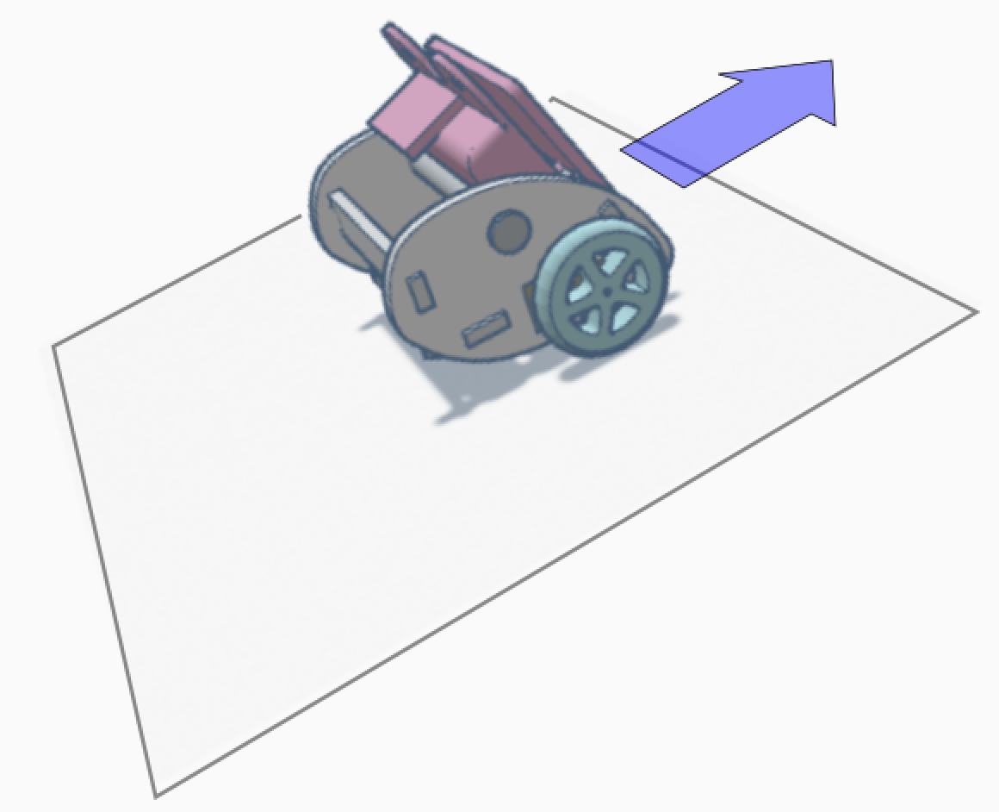

Mobile robotics - Control
Yesterday, you learned how to make a robot sense and how to make it act on its environment. But there was a big things missing to make the robot really move: a frame, a structure to hold all the parts together, we could say the bones of our mobile robot. Today we'll solve this problem: you'll build a frame, and following you will discover some standard mobile robotics problems and learn how to solve them.
Building the big:buggy
| Read the manual | Collect the parts | Building | Done |
|---|---|---|---|
 |
 |
 |
 |
Figure: Building the bit:buggy.
To build the robot, I invite you to follow the instructions provided in the Bit:Buggy isntruction manual. However this manual is missing some valuable information:
- Before starting identify the two bags that come along with the servo motors (in them there should screws and several servo horns, that is white plastic pieces to put on the servos). Those pieces won't be of any use and are not listed in the component list of the bit:buggy car, so put them aside.
- In step 1. pay attention to the wheels: their two sides are differents, only one side can plug onto the motor end. Also, when screwing the wheel onto the motor, hold the wheel (if you don't you could make the motor turn using the screws and that might damage the motor).
- In step 3. make the cables of the motors stick upward. Moreover you have to push through to really get the plastic parts completely in one another.
- In step 4. be delicate with the screw. You should not have to force. If it's hard to screw it in, it's probably that the alignment is ot correct. If it is, unscrew first, correct the alignment and try screwing again.
- Before step 6 put the batteries in if it is not yet in, and turn off the board with the switch.
- After step 6, when you plug the cables, remember you learned today: the black cable plugs onto G ! The picture of the instructions might be a bit misleading. By the way the cables are long (not like the picture), simply tuck them inside the robot frame and you are ready to roll.
Moving basics
Now that we've got some bones to hold our muscles, eyes and brain, it's time for you to remember what you learned today to do a simple program to make the buggy move.
Exercice 1
- 1.1 Program micro:bit to move forward when the robot move forward when the button A is pressed and stop when B is pressed.
- 1.2 Rewrite your program to make it clean and reusable: define the functions setLeftSpeed(v) and setRightSpeed(v) for v in [-100, 100] so that to go straight at full speed we just have to call setLeftSpeed(100) and setRightSpeed(100).
- 1.3 Rewrite your program to make it even cleaner and reusable: define a function goStraight(v) that can be used to make the robot move forward (or stop) at the speed we want.
Control laws
| Pitch | Roll | Roll |
|---|---|---|
|  |  |
 |
Figure: The buggy moves along the steepest ascent.
Exercise: program the buggy to always follow the steepest ascent using the x and z axes of the accelerometer. A tutorial with useful information about the accelerometer can be found here.
Exercice 2
ON/OFF control law.
Some explaination about proportional control laws.
Exercice 3
Proportional control law. Focus on problem decomposition: first one dimension, then second, then join them.
Remote communication
Discovering the radio emettor and receptor.
Exercice 4
- 4.1 Control the buggy from another micro:bit by tilting it. Again focus on problem decomposition.
- 4.2 Optional 1: Control the buggy using another micro:bit equipped with two potentiometers (remove the batteries if you do so to make sure you don't give 5V to micro:bit and burn it). One potentiometer for the forward/backward speed, the other for turning (like on many RC vehicles)
- 4.3 Optional 2 (hard): Program the buggy to always come back to the orientation it started with. For this you'll need to use it's internal compas which is quite a special sensor.
Conclusion
Remainder of lessons learned.